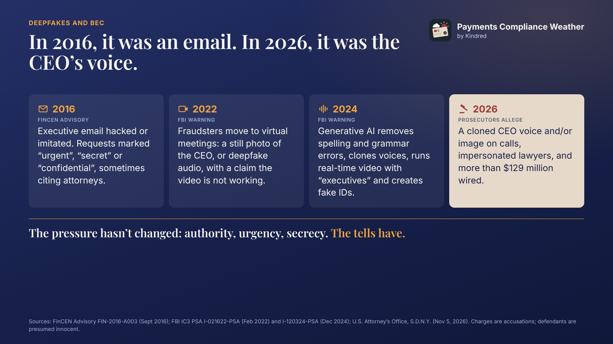

Payments Compliance Weather
Deepfake CEO fraud: what the $129 million case means for payments controls

Executive impersonation is not new. What generative AI adds is a convincing voice and face. Federal prosecutors allege a group used that to divert more than $129 million in wires, including from two hospital systems.
The case
On November 5, 2026, the U.S. Attorney’s Office for the Southern District of New York charged Jacob Soall, Sharon Hazan and Guy Sheetrit with wire fraud, aggravated identity theft and money laundering. The charges are accusations; the defendants are presumed innocent unless and until proven guilty. According to the release, from 2024 to 2026:
- Executive impersonation: conspirators posed as CEOs and asked employees for help with a “confidential financial transaction”.
- Deepfake voice and video: they used what the release calls “super intelligence” (“SI”) to mimic the CEO’s voice and/or image in calls.
- Fake third-party validation: they then impersonated lawyers at large international law firms, who directed the wire.
- Mule accounts: funds went to accounts controlled by the group in countries including the United States, Spain, Portugal, Greece, the UAE, Singapore, Austria, Slovakia and China.
- Crypto layering: proceeds were converted into cryptocurrency to conceal their source and distributed.
- Isolation tactic: a handwritten “Lawyer Call” script discouraged employees from discussing the calls with colleagues.
You were trained to spot the typo. Now there isn’t one.
Executive impersonation has been on regulators’ radar for a decade. What has changed is how convincing it is.
- 2016: FinCEN warned that criminals hack or imitate executives’ email to send payment instructions, often marked “urgent”, “secret” or “confidential”, and sometimes based on emails from executives or attorneys that cannot be verified.
- 2022: the FBI reported fraudsters moving to virtual meetings, showing a still picture of the CEO or using deepfake audio and claiming the video was not working.
- 2024: the FBI warned that generative AI lets criminals limit spelling and grammar errors, clone voices, hold real-time video chats posing as company executives and create fake identity documents, at a larger scale.
The pressure hasn’t changed: authority, urgency, secrecy. The tells have.

How it maps to known typologies
| Element | Industry term | Where it hits |
|---|---|---|
| Fake CEO and lawyers | Executive impersonation, a form of business email compromise (BEC) | Corporate payment approvals |
| Cloned voice and image | Deepfake audio and video created with generative AI | Voice or video as a verification factor |
| Employee sends the wire | Authorized push payment (APP) fraud | Authentication passes; the instruction is false |
| Accounts across many countries | Money mule accounts | Receiving institutions’ KYC and monitoring |
| Conversion to crypto | Layering through virtual assets | Crypto platforms’ on-ramp monitoring |
The weak point is the same in each row: a control that relies on recognizing a person. GenAI makes that recognition unreliable.
Controls by role
Corporate treasury and accounts payable
- Out-of-band verification for every high-value or first-time payment, using contact details from your own records, never from the request.
- Dual control: a second approver who was not on the call or thread.
- A written rule that executives never request confidential payments by call or video alone.
- Deepfake awareness training. Treat urgency and secrecy as red flags, not reasons to comply.
Originating banks and payment service providers
- Risk-score wires by beneficiary age, amount and corridor: a first payment to a new beneficiary in a new country deserves friction.
- Call the client back on file when a wire breaks pattern.
- Send recall requests to the beneficiary bank immediately. Once funds are credited, recovery depends on the receiving bank.
Beneficiary banks, fintechs and other account providers
- KYC and KYB that can withstand deepfakes: liveness detection and document authentication. FinCEN’s 2024 deepfake alert reports more SARs describing fraudulent identity documents used to get past identity verification.
- Mule monitoring: new or low-activity accounts receiving large wires from unrelated companies, followed by rapid outbound transfers, especially to crypto platforms.
- File SARs where required.
Crypto platforms (VASPs)
- Monitor on-ramp deposits from accounts that recently received large third-party wires.
- Respond quickly to law enforcement and bank tracing requests.
Response: the 72-hour window
FinCEN’s Rapid Response Program fact sheet says it is most likely to interdict or recover funds when fraudulent wires are reported to law enforcement within 72 hours.
Victims should contact their bank immediately and file with the FBI’s IC3 or the nearest U.S. Secret Service field office. Since 2015, the program has helped interdict $1.8 billion and recover over $1 billion.
Pre-assign who calls the bank and who files, and keep the data ready: beneficiary name, account and bank, receiving branch country, wire date, amount, currency and a short summary.
Questions for your team
- Can one person release a high-value wire on the strength of a call or video?
- Does your callback use contact details from your own records?
- Would your KYC catch an AI-generated ID or a deepfake selfie?
- Who makes the first call inside the 72-hour window?
How is your organization adapting its controls to deepfakes? I’d like to hear where you see the gaps. Join the discussion on LinkedIn.
Sources
- U.S. Attorney’s Office, Southern District of New York: Three Foreign Nationals Arrested And Charged With Scheme To Use Super Intelligence To Defraud Companies Of $129 Million, November 5, 2026
- FinCEN Advisory FIN-2016-A003: Advisory to Financial Institutions on E-Mail Fraud Against Businesses, September 6, 2016
- FBI IC3 PSA I-021622-PSA: Business Email Compromise: Virtual Meeting Platforms, February 16, 2022
- FBI IC3 PSA I-120324-PSA: Criminals Use Generative Artificial Intelligence to Facilitate Financial Fraud, December 3, 2024
- FinCEN Issues Alert on Fraud Schemes Involving Deepfake Media Targeting Financial Institutions, November 13, 2024
- FinCEN: Rapid Response Program fact sheet, April 15, 2026
- FBI Internet Crime Complaint Center (IC3)
General information based on public sources, not legal advice. The charges are accusations, and the defendants are presumed innocent unless and until proven guilty.